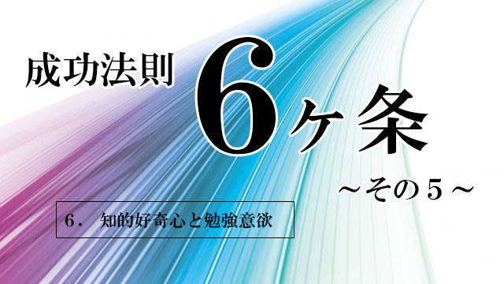

- 常識を疑う
- 物事を「ありのまま」に見る
- 情熱と集中力
- 高い共感力
- 誠実さと実行力
- 知的好奇心と勉強意欲
6. 知的好奇心と勉強意欲
知的好奇心というと何やら高級な響きに聞こえますが、そうではなく人間なら誰にでも備わっているものに過ぎません。
たとえばどんな人も1つや2つは好きな分野というものがあります。
好きな芸能人。
好きな音楽。
好きなスポーツ。
行ってみたい国。
そしてそれらの興味関心に促されて、情報を収集したり調べたり、会いに行ったり聞きに行ったりとするうちに知識は増えて詳しくなっていきます。
趣味の世界ならマニアと呼ばれる人たち。
彼らは知的好奇心のカタマリと言えるでしょう。
興味のおもむくまま、つまり知的好奇心に促されて深く追求していく作業がすなわち勉強であり、知的好奇心と勉強意欲は比例しているといえます。だからこれもワンセット。
元々私たち人間は知的好奇心を生まれながらに持っています。（ということは勉強―学習― 意欲も持っていることになる）
幼い子どもの「空はなぜ青いの？」に始まって、私たちは物事の仕組みや成り立ちに不思議を感じ、それを解明したい強い欲求を抱いています。
この「知りたい欲求」―知的好奇心―こそが、文明を生んだといっても良いでしょう。
学問。科学技術。芸術。
これらの進歩発展の根底には常に知的好奇心と勉強意欲があり、それこそが私たちの生活を物質的にも精神的にも豊かにする原動力といえるでしょう。
社会に出てからの勉強こそ大切
ところで、この知的好奇心と勉強意欲、本来人間にとって自然な欲求であるはずなのに、大人になっても持ち続ける人とそうでない人にわかれてしまうのはナゼでしょう。
その答えは最後に記しますが、成功法則的にいえばこの欲求を大人になり社会人になっても持ち続ける人が「成功者」といえます。
要するに、学生時代よりも社会人になってからの方が「勉強」が必要ということです。
この場合の勉強とは、もちろん学校時代の勉強とは性質が違います。
たとえば、会社に入ると最初は仕事の手順や内容は教えてもらえるでしょうが、一定のレベルに達したら、その先は自分で創意工夫し研究していくしかありません。
「どうやったらもっとうまく成果があげられるか」「ムダや非効率を防ぐ方法はないか」「自分なりのオリジナルなやり方を編み出せないか」
このように考え、自分の仕事の領域に関する勉強を始めます。書籍を買い、情報を集めセミナーなどにも参加するかも知れません。
こうして自分に投資し勉強する人と、そうでない人は10年もすると大きな差がつくでしょう。
年功序列や終身雇用が崩れつつある、これからの時代において「勉強意欲」の有無は決定的な要素となると思います。
プラシーボとピグマリオン 2つの効果
ここまでの話は、あくまで「自分の仕事のため」の勉強でしかありません。そういう点では、学生時代の「テストのため」の勉強とあまり変わらないのです。
本当は、知的好奇心の命ずるまま直接仕事と関連していない分野について学ぶことの方が重要だからです。
だいぶ前のことですが、ある敏腕弁護士と話したことがあります。一緒に食事しながら雑談していたときどういういきさつか、量子力学の話になりました。
細かい内容は忘れましたが、量子力学の話でよく出てくるテーマ「観測問題」が話題になって記憶があります。
ちょっと横道にそれますが、この観測問題というのは私自身とても興味があるテーマで、簡単に言うと、電子などの素粒子を観察する際観察する人の主観が対象に影響を与えるというものです。また素粒子は良く知られているように観測されていないときは、波として存在し観測して初めて「粒子」つまり物質としてその姿を表すといいます。
これはよくよく考えてみれば衝撃的な事実です。私たちは、外界にあるモノごとは客観的に実在していると思ってきました。目に見えるものは誰の目にも同じように見えるはずだ。
しかし、見る人の主観によって「対象」はその姿を変えるということになり、客観的な観察などないということになってしまう。
事実、量子力学はこの100年で物理学の常識を根底からゆるがし続けたといえます。
ところで、この量子力学の話を人間に当てはめるとどうなるでしょう。
実は、私の興味はここにあります。
観察対象が観察者の主観によって変わり得るものなら、たとえば生徒は先生の主観によって変わるわけだし、部下は上司がどう見るかによって変わる。夫は妻に。子は親に。患者は医者に。それぞれ「どう見られるか」によっていくらでも変化する。違う側面を見せるということになります。
事実、医者は自信をもって患者に「この薬は効く」と言って渡し励ますなら患者は劇的に回復したりします。いわゆるプラシーボ効果といわれるやつです。
同じことは教師と生徒にもあります。
1人の教師に「あなたのクラスは皆知能テストで優秀な成績をおさめた子ばかりだ」と言って（実はウソ）担任させた場合と、何も言わずクラスを持たせた場合でその後の生徒の伸びを比較調査するという実験があります。
もちろん「ウチのクラスは優秀なんだ」と信じ込んだ教師の持つクラスは、そう思っていない教師のクラスより高い成績の伸びを見せるのです。
教育学で有名なこの現象はピグマリオン効果と呼ばれています。
知的好奇心の芽をつぶすな
さて話を戻します。
たまたま量子力学の話になりましたが、先の弁護士も私もふだんは物理学とは縁のない人間です。
特に私は高校時代、数学と物理はほぼ全てのテストで落第点でした（笑）から、量子力学は大人になってから純粋な好奇心で読み進めているに過ぎません。
しかし、特に仕事に関係のないように見える分野でも知的好奇心をもって調べることは大切ではないかと思います。
視野が広がるからです。
一段高い次元からモノを見ることができ、自分の仕事に関連することだけを学んでいるときには気づかなかった「新たな視点」を得ることができる。
結果として自分の仕事にも奥行きと、質の向上がもたらされることが多いのです。
会社の経営者などが歴史書を好み歴史に精通している人が多いのもそのような事情でしょう。単に目の前の「やるべき仕事」に忙殺されるのではなく、いやそうだからこそ人間の心理や、世の中の動きのダイナミズムを高い視点から見る必要を感じているのでしょう。
私が実際に出会ったり、他から聞かされたりする多くの成功者も例外なく、勉強意欲が強く知的好奇心が高い人ばかりでした。
ところが残念なことに、学生時代に優秀であっても社会に出てから勉強意欲を持ち続ける人は少なく、その数も減り続けていることです。
この理由ははっきりしています。
学生時代に「勉強させられてきた」からです。
小学校から高校までの12年間は、知的好奇心を育てる上でもっとも大切な時期にもかかわらず、子どもたちはテストのため、入試のためという実につまらない目的で、目先の勉強を強制されてきました。
すでに大学に入った時点で、多くの若者は勉強意欲の大半を失っています。勉強とはつまらないものという誤解（あえて誤解と書きます）が強固に植えつけられているのです。
親や教師、さらに子どもを預かる教育機関は子どもに無闇に「勉強しろ」と強制することが、子どもの知的好奇心というもっとも人間として大切な才能を奪いかねない行為だと自覚して欲しいのです。
悪いことに教育に携わる人自身が何のために勉強するのか分かっていない。
テストのために勉強があるのではない。
人間（成長）のために勉強がある。
本末転倒せず、このことをきちんと踏まえた上で将来の成長のために子どもの資質を伸ばしていきたいものです。
さらに子どもを持つ親の皆さんにもお願いしたいこと。
それは、目先の点数とか入試のためよりもお子さんの興味関心を育てることにもっと注意を傾けて欲しいということです。
お子さんが興味や関心をもっていることは何か。「勉強と関係ないからダメ」ではなく、たとえ一見ムダに見えることでも認めてあげてください。
そしてできれば感心し励ましてあげてください。
そうすればやがて社会に出てからも勉強し続ける人になるかも知れません。
勉強し続ける人こそが、社会の役にも立ち豊かな人生を送る人すなわち成功者に近づき得るからです。